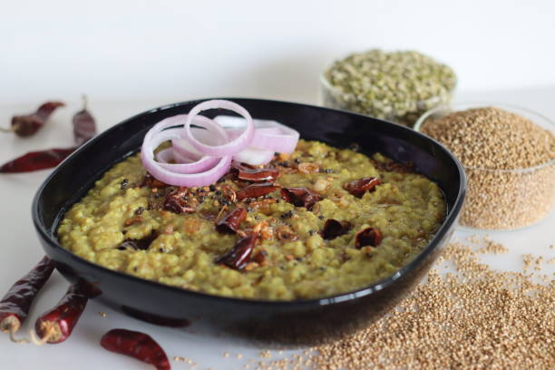

Back to States
Bajre ki Khichdi

Ingredients
- 1 cup bajra (pearl millet)
- 1/2 cup moong dal (yellow lentils)
- 4 cups water
- 1/2 tsp cumin seeds
- 1/4 tsp turmeric powder
- 1 tbsp ghee
- Salt to taste
- A pinch of asafoetida (hing)
Instructions
1. Wash bajra and moong dal thoroughly and soak for 30 minutes.
2. In a pressure cooker, heat ghee. Add cumin seeds and asafoetida.
3. Add soaked bajra and dal. Add turmeric, salt, and water.
4. Pressure cook for 4-5 whistles or until soft and mushy.
5. Serve hot with ghee or curd for authentic taste.